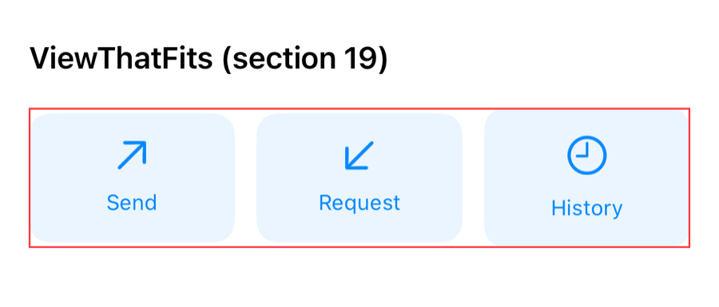
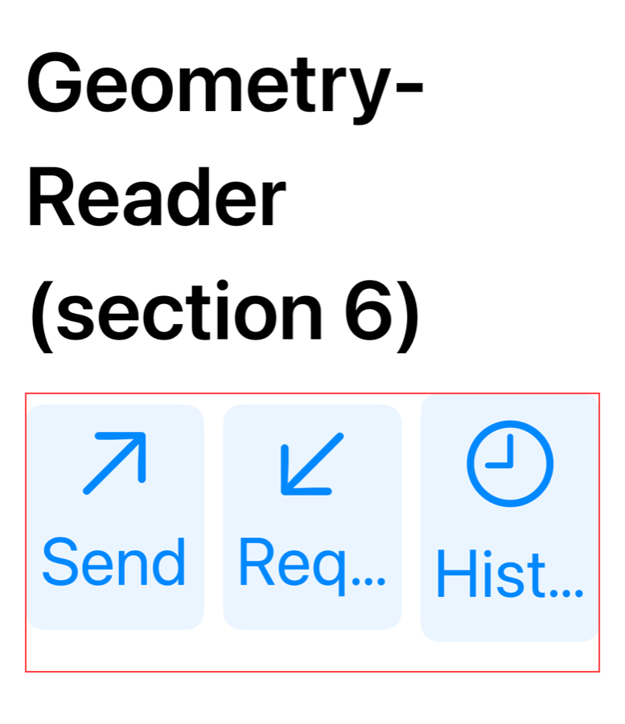
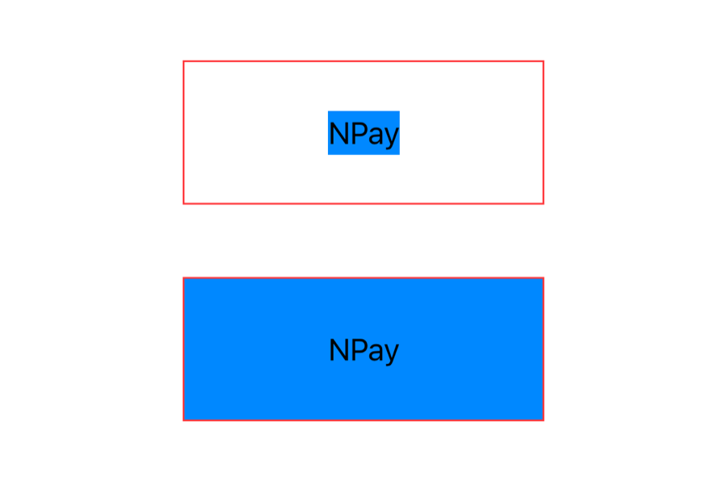
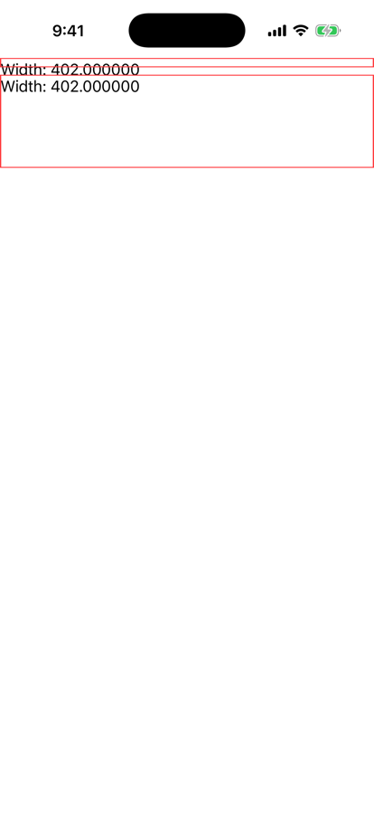
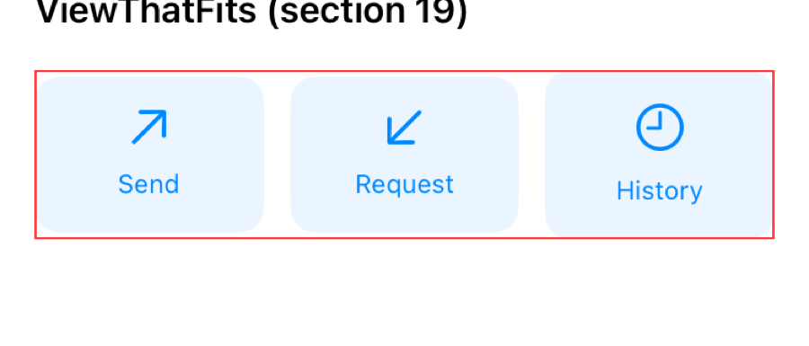
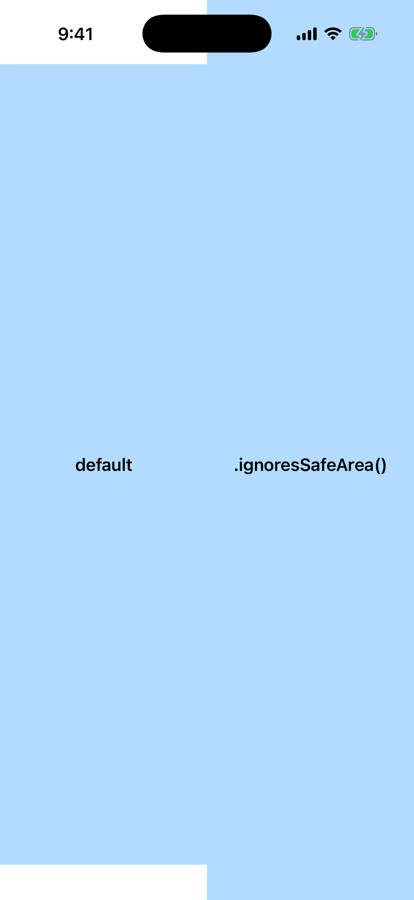
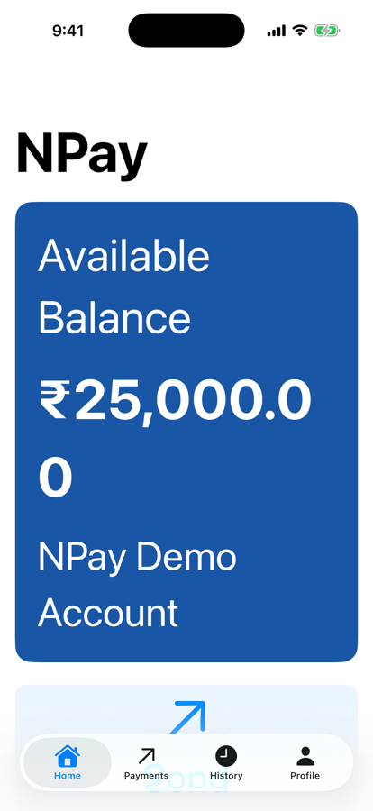
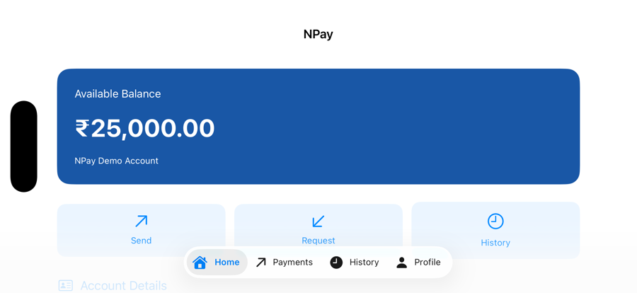

Unit 03 · Lesson 3.8
Adaptive Layouts
& GeometryReader
One screen, many sizes: iPhone SE to iPad, portrait to landscape, default text to the largest. Adapt to the content, not a guessed breakpoint.
Lesson 3.8 · Outcomes
By the end, you will be able to explain
Explain the layout negotiation: propose, choose, place
Predict what .frame and modifier order do
Use GeometryReader when you need geometry, and know its traps
Adapt with ViewThatFits instead of a fixed breakpoint
Switch layouts with AnyLayout and keep state
Test sizes, orientation, Dynamic Type and safe areas
Lesson 3.8 · Where we are
Today: layouts that adapt
Unit 03 · Advanced SwiftUI & Navigation
Part 1
The milestone
Fixed layouts break
Part 1 · Our NPay milestone (section 1)
Fine on a wide screen; cramped with large text
HStack(spacing: 12) {
QuickAction(title: "Send")
QuickAction(title: "Request")
QuickAction(title: "History")
}- Adapt to the available space
- Small screens, large screens, larger text

iPhone 17, default text

Same row, largest text: “Req…”, “Hist…”
Part 2
The layout negotiation
Propose, choose, place
Part 2 · SwiftUI’s layout system (section 2)
A conversation between parent and child
- Frames and Auto Layout constraints
- Proposal-based: children decide their own size
Text("NPay")takes what its content needs
Part 2 · The negotiation, logged (sections 2, 15; authored experiment)
A VStack of 320 points asks; each child answers
struct ProposalLog: Layout { // passes through, prints
let name: String
func sizeThatFits(proposal: ProposedViewSize,
subviews: Subviews, cache: inout ()) -> CGSize {
let size = subviews[0].sizeThatFits(proposal)
print("\(name): proposed \(proposal) → chose \(size)")
return size
}
func placeSubviews(in bounds: CGRect, proposal: ProposedViewSize,
subviews: Subviews, cache: inout ()) {
subviews[0].place(at: bounds.origin, proposal: proposal)
}
}
VStack(spacing: 24) {
ProposalLog(name: "Text") { Text("NPay") }
ProposalLog(name: "maxWidth") {
Text("NPay").frame(maxWidth: .infinity)
}
ProposalLog(name: "Color") { Color.blue }
}
.frame(width: 320, height: 300)Text: 320×0 → 39×24 320×∞ → 39×24
maxWidth: 320×0 → 320×24 320×∞ → 320×24
Color: 320×0 → 320×0 320×∞ → 320×∞
Text: 320×84 → 39×24
maxWidth: 320×113 → 320×24
Color: 320×203 → 320×203
- Text takes its content: 39×24
maxWidth: .infinity= take the proposed width, not infinity- Color takes whatever it is offered
Part 3
Frames and order
Modifiers wrap layout
Part 3 · How .frame() works; modifier order (section 3)
Background first, or frame first?
// Example A
Text("NPay")
.background(.blue)
.frame(width: 200, height: 80)
// Example B
Text("NPay")
.frame(width: 200, height: 80)
.background(.blue)- A new view description that takes part in layout
- Not a mutable
UIView.frame
- Layout, hit testing, animation, rendering

A: background wraps the text · B: background fills the frame
Part 4
GeometryReader
Geometry, when you need it
Part 4 · What is GeometryReader? (section 4, experiments 1–2)
The proxy reports the offered space
struct GeometryExperiment: View {
var body: some View {
GeometryReader { geometry in
VStack {
Text("Width: \(geometry.size.width)")
Text("Height: \(geometry.size.height)")
}
}
}
}
geometry.size
geometry.safeAreaInsets
geometry.frame(in: .local)
geometry.frame(in: .global)- Size, safe-area insets, frames in coordinate spaces
- Read during layout
| Device | Reported size (pt) |
|---|---|
| iPhone 17, portrait | 402 × 778 |
| iPhone 17, landscape | 750 × 382 |
| iPhone SE (3rd gen.) | 375 × 647 |
| iPad Air 11-inch | 820 × 1128 |
Part 4 · How GeometryReader participates in layout (section 5)
It takes what it’s offered
- It often takes all the space proposed
- Inside a ScrollView or VStack: surprises (next slide)
Part 4 · Why GeometryReader sometimes behaves unexpectedly (sections 13, 16)
In a ScrollView: 10 points tall
ScrollView {
GeometryReader { geometry in
Text("Width: \(geometry.size.width)")
}
GeometryReader { geometry in
Text("Width: \(geometry.size.width)")
}
.frame(height: 100)
}no height: 402 × 10
.frame(height: 100): 402 × 100
- A vertical ScrollView proposes an unspecified height
- GeometryReader’s ideal size is small: 10

Red borders: 10 pt, then 100 pt
Part 5
Adaptive quick actions
A breakpoint, or a fit?
Part 5 · Build adaptive quick actions with GeometryReader (section 6)
Measure the width; switch below 350
struct NPayQuickActions: View {
let onSend: () -> Void
let onRequest: () -> Void
let onHistory: () -> Void
var body: some View {
GeometryReader { geometry in
let isCompact = geometry.size.width < 350
Group {
if isCompact {
VStack(spacing: 12) { actions }
} else {
HStack(spacing: 12) { actions }
}
}
}
.frame(height: 180)
}
@ViewBuilder
private var actions: some View {
QuickAction(symbol: "arrow.up.right", title: "Send",
action: onSend)
// Request and History the same way
}
}- GeometryReader measures the width
- A conditional picks HStack or VStack
@ViewBuildershares the actions; closures supply behaviour
.frame(height: 180): a teaching shortcut- May waste space, or clip with larger text
Part 5 · The 350-point breakpoint, measured (sections 6, 17)
Wrong in both directions
| Device, text size | Width | Chose | Result |
|---|---|---|---|
| iPhone 17, default | 370 | HStack | fine; 180 pt mostly empty |
| iPhone 17, largest | 370 | HStack | “Req…”, “Hist…” |
| iPhone SE, default | 343 | VStack | third button clipped by 180 pt |
| iPad Air 11, default | 788 | HStack | fine |
- 350 assumes one breakpoint for every text size and language
- It failed at both a narrow width and a large text size
iPhone 17, largest text

iPhone SE: History below the 180-pt frame
Part 5 · Better: ViewThatFits (sections 7, 19)
The first candidate that fits wins
struct NPayQuickActions: View {
let onSend: () -> Void
let onRequest: () -> Void
let onHistory: () -> Void
var body: some View {
ViewThatFits(in: .horizontal) {
HStack(spacing: 12) { actionViews }
VStack(spacing: 12) { actionViews }
}
}
@ViewBuilder
private var actionViews: some View {
// the same three QuickActions
}
}- Decides by whether the content fits
- No fixed height; no device breakpoint
| Device, text size | ViewThatFits chose |
|---|---|
| iPhone 17, default | HStack |
| iPhone 17, largest | VStack, full width |
| iPhone SE, default | HStack: it fits |
| iPhone SE, largest | VStack |
| iPad Air 11, default | HStack |

iPhone SE, default text: a row
Part 5 · ViewThatFits: an important nuance (sections 7, 17)
It judges ideal sizes, not truncation
- Each candidate’s ideal size along the axis
- Not a comparison with a hardcoded screen width
- Flexible content can “fit” while compressing or truncating
- QuickAction uses
maxWidth: .infinity: its ideal width is its label
- It worked here because the labels’ ideal widths grew with the text
- Still test: large text, other languages
AnyLayout, grids, customLayout, size classes
Part 6
AnyLayout and identity
Switch the layout, keep the children
Part 6 · AnyLayout: switch the algorithm, keep the structure (section 8)
One child list, two layouts
struct AdaptiveActions: View {
let compact: Bool
var body: some View {
let layout = compact
? AnyLayout(VStackLayout(spacing: 12))
: AnyLayout(HStackLayout(spacing: 12))
layout {
Text("Send")
Text("Request")
Text("History")
}
}
}- Type-erases a
Layout:HStackLayout,VStackLayout… - Callable like a container:
layout { … }
- Not two branches with two structures
- The same children; only the algorithm changes
Part 6 · AnyLayout and state identity (sections 9, 18)
Count to 3, switch the layout
struct CounterView: View {
@State private var count = 0
var body: some View {
Button("Count: \(count)") { count += 1 }
}
}
// AnyLayout (section 18)
let layout = vertical ? AnyLayout(VStackLayout())
: AnyLayout(HStackLayout())
layout { CounterView() }
// Branches (section 9)
if vertical {
VStack { CounterView() }
} else {
HStack { CounterView() }
}AnyLayout: Count: 3 → Count: 3
if / else: Count: 3 → Count: 0
- Branches: different structural positions, new identity
- AnyLayout: same position, same identity, state kept
- Consider identity, not only the arrangement
Part 7
Beyond width
Safe areas, text size, orientation
Part 7 · Safe areas (sections 10, 13)
Extend backgrounds, not buttons
ZStack {
Color.blue.opacity(0.3)
Text("default")
}
ZStack {
Color.blue.opacity(0.3)
.ignoresSafeArea()
Text(".ignoresSafeArea()")
}- Status bar, home indicator, other system boundaries
- Layout respects them by default
.ignoresSafeArea()- Good: a decorative background
- Bad: interactive controls under system gestures or cutouts

Left: default · right: ignores
Part 7 · Adaptive typography and Dynamic Type (section 11)
Text grows; layouts must make room
.headline: 24.3 → 74.7 pt at the largest size.system(size: 16): stays 19.3 pt
- An HStack that fits at the default size may not
- Adapt to content, not just device dimensions
- At the largest size the balance wraps: “₹25,000.0 / 0”
- A money value must never split: fix in BalanceCard

Default text

Largest text
Part 7 · Responsive design isn’t only about width (section 20)
Seven factors; we measured five
| Factor | Example (ours where measured) |
|---|---|
| Available width | iPhone SE 375 pt, iPhone 17 402 pt, iPad 820 pt |
| Orientation | landscape: 750 × 382 usable on iPhone 17 |
| Dynamic Type | labels truncate; a row stops fitting |
| Safe areas | status bar, home indicator, side insets |
| Localization | longer translated labels |
| Keyboard | less visible content |
| Multitasking | iPad: variable window size; rotation can’t be forced |
UISceneErrorDomain 101: “The current windowing
mode does not allow for programmatic
changes to interface orientation.”
- Adapt to the actual content and space
Part 8
NPay, responsive
Integrate and verify
Part 8 · A responsive dashboard layout (section 12)
ViewThatFits, made generic
struct NPayDashboardLayout<Content: View>: View {
@ViewBuilder let content: Content
var body: some View {
ViewThatFits(in: .horizontal) {
HStack(spacing: 16) { content }
VStack(spacing: 16) { content }
}
}
}- 3.7’s generic
Content: View+@ViewBuilder - Any content: row if it fits, else column
contentappears in both candidates- For complex content, prefer explicit layout components
Part 8 · NPay Home with responsive quick actions (integration, authored)
Same code, four environments
iPhone SE
iPhone 17, largest text

iPhone 17, landscape
Home now uses NPayQuickActions (section 19): Send → Payments, History → History, Request → an alert (not in the demo).
Part 8 · Xcode verification lab (sections 13, 21)
Eight checks, all run
| Check | Result (simulator) |
|---|---|
| Smaller iPhone simulator | iPhone SE (3rd gen.): 375 pt; actions in a row |
| Larger iPhone simulator | iPhone 17: 402 pt; iPad Air 11: 820 pt |
| Rotate to landscape | 750 × 382 usable; row of actions |
| Increase Dynamic Type | actions become a column; balance wraps (to fix) |
| GeometryReader vs ViewThatFits | breakpoint truncated and clipped; ViewThatFits didn’t |
| AnyLayout HStack ↔ VStack | switches; same children |
| CounterView survives the switch | AnyLayout 3 → 3; branches 3 → 0 |
| Buttons usable, text readable | yes, except the wrapped balance |
Debugging tip from section 13: .border(.red) shows container bounds; our screenshots use it.
Lesson 3.8 · Recap
What to remember
Propose, choose, place
children size themselves; maxWidth means the proposed width
Fit, don’t guess
ViewThatFits over a 350-pt breakpoint; test anyway
Adapt without resetting
AnyLayout keeps identity; respect safe areas and text size
Review
Check your understanding
Check your understanding · 1 of 10
What is SwiftUI’s core layout negotiation model?
- Every view uses absolute coordinates
- Parent proposes, child chooses, parent places
- Only Auto Layout constraints
Our log: proposed 320×0 → chose 39×24 for Text.
Common trap: Thinking in UIKit frames.
Check your understanding · 2 of 10
What does GeometryReader provide?
- Network data
- Persistent storage
- Geometry information from its layout context
402 × 778 on iPhone 17; 820 × 1128 on iPad Air.
Common trap: Using it for everything responsive.
Check your understanding · 3 of 10
Why can GeometryReader be problematic inside a ScrollView?
- It always crashes
- Its sizing interacts unexpectedly with scroll-axis proposals
- It disables SwiftUI
Unspecified height → 10 points tall.
Common trap: Expecting it to fill the scroll area.
Check your understanding · 4 of 10
What is ViewThatFits useful for?
- Choosing content that fits available space
- Persisting payment data
- Routing between screens
Row on the SE, column at the largest text size.
Common trap: Expecting it to detect truncation.
Check your understanding · 5 of 10
Why use AnyLayout?
- To erase application state
- To create threads
- To switch layout algorithms while retaining child structure
Same children, HStackLayout or VStackLayout; the counter kept 3.
Common trap: Writing two branches.
Check your understanding · 6 of 10
Does a fixed screen-width breakpoint always account for Dynamic Type?
At 370 points and the largest text: “Req…”, “Hist…”.
Common trap: Designing for one text size.
Check your understanding · 7 of 10
On an iPhone SE the quick actions get 343 points; at the default text size a row of three fits. With the width < 350 version, what do you get?
- A row
- A column, clipped by the 180-point frame
- Nothing
343 < 350: VStack; three buttons need about 246 points.
Common trap: Trusting the breakpoint.
Check your understanding · 8 of 10
ScrollView { GeometryReader { … } } on an iPhone 17, no height given. Its size?
- 402 × 778
- 402 × 10
- 0 × 0
The unspecified scroll-axis height leaves its ideal size: 10.
Common trap: Expecting it to fill the screen.
Check your understanding · 9 of 10
CounterView shows Count: 3. A Switch Layout button toggles between if vertical { VStack { CounterView() } } else { HStack { … } }. After switching?
- Count: 3
- Count: 0
Different branches, new identity; AnyLayout kept 3.
Common trap: Thinking a layout change is cosmetic.
Check your understanding · 10 of 10
From Lesson 3.7: which of these scales with the user’s text size?
.font(.system(size: 16)).font(.headline)
Headline 24.3 → 74.7 pt; the fixed 16 pt stayed 19.3.
Common trap: Using fixed sizes for UI text.
Lesson 3.8 · Where this goes next
Where this goes next
| Lesson | Topic | Builds on today |
|---|---|---|
| 3.9 | SwiftUI environment & preferences | custom environment values, themes, @Environment, @EnvironmentObject |
| 3.10 | Accessibility | Dynamic Type, motion and more, in depth |
Lesson 3.8 · Lab
A responsive NPay
Make Home adapt; prove it on three devices.
- Show the available width with GeometryReader.
- Run both NPayQuickActions on an SE and an iPhone 17.
- Switch to the largest text size; compare.
- Count to 3; switch layouts with AnyLayout, then branches.
- Rotate; check safe areas with
.border(.red). - Stop the balance wrapping at the largest size.
- Screenshots: SE, iPhone 17 large text, landscape
- Your counter results
- Your BalanceCard fix
Lesson 3.8 complete
Adaptive Layouts
& GeometryReader
Next: Lesson 3.9 — SwiftUI Environment & Preferences